| Project | Classification | NATO |
Silhouette |
Name | Laid down | Launched | Commisioned | Entered Service | Decommisioned | Sunk |
| ATTACK SUBMARINES (SSN): |
| Project 627 |
Кит (Kit = "whale") |
November |
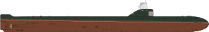 |
K-3 Leninsky Komsomol |
1954-06 |
1957-08-09 |
1058-06-04 |
|
1988 |
|
| Project 627A |
Кит (Kit = "whale") |
November |
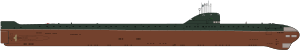 |
K-5 |
1956-08-13 |
1958-09-01 |
1959-12-26 |
|
|
|
| K-8 |
1957-09-09 |
1959-05-31 |
1959-12-31 |
|
|
1970-04-12 |
| K-14 |
1958-09-02 |
1959-08-16 |
1959-12-30 |
1960-08-31 (Northern Fleet) |
1990-04-19 |
|
| K-52 |
1959-10-28 |
1960-08-28 |
1960-12-10 |
1987 |
|
|
| K-21 |
1960-04-02 |
1961-06-18 |
1961-11-28 |
1961-11-28 (Northern Fleet) |
1991 |
|
| K-11 |
1960-10-31 |
1961-09-01 |
1961-12-30 |
1990-04-19 |
1962-03-16 (Northern Fleet) |
|
| K-133 |
1961-06-03 |
1962-06-05 |
1962-10-29 |
1962-11-14 (Northern Fleet) |
1990-04-19 |
|
| K-181 |
1961-11-15 |
1962-09-07 |
1962-12-27 |
|
|
|
| K-115 |
1962-04-04 |
1962-10-22 |
1962-12-31 |
|
|
|
| K-159 |
1962-08-15 |
1963-06-06 |
1963-10-09 |
|
1989-05-30 |
2003-08-30 |
| K-42 |
1962-11-28 |
1963-08-17 |
1963-11-30 |
|
1985-08-10 |
|
| K-50 |
1963-02-14 |
1963-12-16 |
1964-07-17 |
1964-08-06 (Northern Fleet) |
1990-04-19 |
|
| K-27 |
1958-06-15 |
1962-04-01 |
1963-10-30 |
1965-09-07 (Red Banner Northern Fleet) |
1979-02-01 |
|
| Project 671 |
Ёрш (Yorsh = "Ruffe") |
Victor-I |
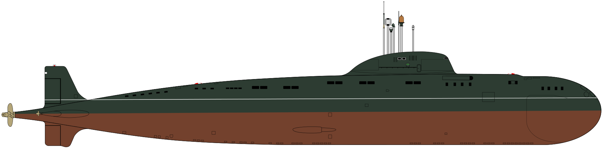 |
K-38 |
1963-04-12 |
1966-07-28 |
1967-11-05 |
|
|
|
| K-69 / K-369 |
1963-01-24 |
1967-12-28 |
1968-11-06 |
|
|
|
| K-147 / B-147 |
1964-09-16 |
1968-06-17 |
1968-12-21 |
|
|
|
| K-53 / B-53 |
1964-12-16 |
1969-03-17 |
1969-09-30 |
|
|
|
| K-306 |
1968-03-20 |
1969-06-07 |
1969-12-05 |
|
|
|
| K-323 / 50 let SSSR / B-323 |
1968-07-05 |
1970-03-14 |
1970-09-23 |
|
|
|
| K-370 / B-370 |
1969-04-19 |
1970-06-26 |
1970-12-05 |
|
|
|
| K-438 / B-438 |
1969-06-13 |
1971-03-23 |
1971-09-15 |
|
|
|
| K-367 / B-367 |
1970-04-14 |
1971-07-02 |
1971-12-05 |
|
|
|
| K-398 / B-398 |
1971-04-22 |
1972-08-02 |
1972-12-15 |
|
|
|
| K-462 / B-462 |
1972-07-03 |
1973-09-01 |
1973-12.30 |
|
|
|
| K-481 / B-481 |
1973-09-27 |
1974-09-09 |
1974-12-27 |
|
|
|
| K-314 |
1970-09-05 |
1972-03-28 |
1972-11-06 |
|
|
|
| K-454 / B-454 |
1971-07-24 |
1973-05-05 |
1973-10-30 |
|
|
|
| K-469 / B-469 |
1973-09-05 |
1974-06-10 |
1974-09-30 |
|
|
|
| Project 671RT |
Сёмга (Syomga = "Atlantic Salmon") |
Victor-II |
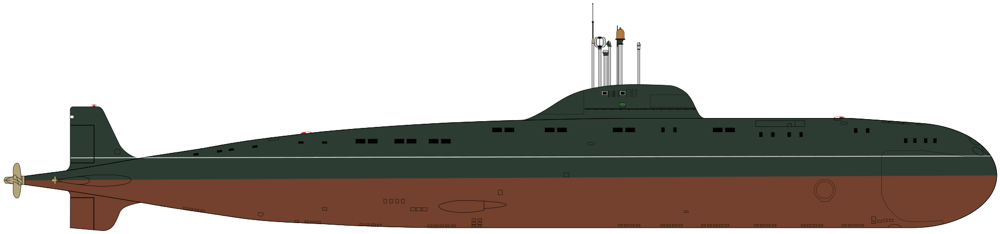 |
K-387 / B-387 |
1971-04-02 |
1972-09-02 |
1972-12-30 |
|
|
|
| K-371 / B-371 |
1973-02-27 |
1974-07-30 |
1974-09-30 |
|
|
|
| K-467 / B-467 |
1974-11-19 |
1976-05-07 |
1976-11-30 |
|
|
|
| K-488 / B-488 |
1976-12-15 |
1977-10-08 |
1978-09-29 |
|
|
|
| K-505 |
1975 |
|
|
|
|
|
| K-495 / B-495 |
1974-09-28 |
1975-08-26 |
1975-12-31 |
|
|
|
| K-513 / B-513 |
1975-07-22 |
1976-08-21 |
1976-12-27 |
|
|
|
| K-517 / B-517 |
1977-03-23 |
1978-08-24 |
1978-12-31 |
|
|
|
| Project 671RTM |
Щука (Shchuka = "Pike") |
Victor-III |
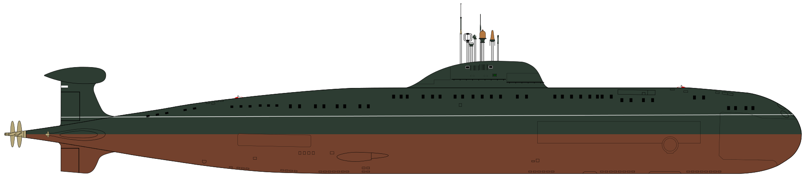 |
K-524 / K-524 60 let shefstva VLKSM / B-524 |
1976-05-07 |
1977-07-31 |
1977-12-28 |
|
|
|
| K-254 / B-254 |
1977-09-24 |
1979-09-06 |
1979-12-30 |
|
|
|
| K-502 / B-502 / B-502 Volgograd |
1979-07-23 |
1980-08-17 |
1980-12-31 |
|
|
|
| K-527 / B-527 |
1978-09-28 |
1981-07-24 |
1981-12-30 |
|
|
|
| K-298 / B-298 |
1981-02-25 |
1982-07-14 |
1982-12-27 |
|
|
|
| K-358 / K-358 Murmanskiy komsomoletc / B-358 |
1982-07-23 |
1983-07-15 |
1983-12-29 |
|
|
|
| K-299 / B-299 |
1983-12-20 |
1984-06-29 |
1984-12-22 |
|
|
|
| K-244 / B-244 |
1984-12-25 |
1985-07-09 |
1985-12-25 |
|
|
|
| K-274 / B-247 |
1977-07-15 |
1978-08-13 |
1978-12-30 |
|
|
|
| K-507 / B-507 |
1977-11-02 |
1978-10-01 |
1979-11-30 |
|
|
|
| K-251 / B-251 |
1979-07-29 |
1980-05-03 |
1980-09-30 |
|
|
|
| K-255 / B-255 |
1979-11-07 |
1980-07-20 |
1980-12-28 |
|
|
|
| K-324 / B-324 |
1980-02-23 |
1980-09-07 |
1980-12-30 |
|
|
|
| K-355 / B-355 |
1980-12-31 |
1981-08-08 |
1981-29-12 |
|
|
|
| K-360 / B-360 |
1981-05-09 |
1982-04-27 |
1982-09-29 |
|
|
|
| K-218 / B-218 |
1981-11-07 |
1982-07-24 |
1983-12-28 |
|
|
|
| K-242 / K-242 50 let Komsomol`sku-na-Amure / B-242 |
1982-06-12 |
1983-04-29 |
1983-10-25 |
|
|
|
| K-492 / B-492 |
1978-02-23 |
1979-06-28 |
1979-12-30 |
|
|
|
| K-412 / B-412 |
1978-10-29 |
1979-09-06 |
1979-12-30 |
|
|
|
| K-305 / B-305 |
1980-07-27 |
1981-05-17 |
1981-09-30 |
|
|
|
| K-264 / B-264 |
1983-07-29 |
1984-06-08 |
1984-10-26 |
|
|
|
| K-315 |
1982 |
|
|
|
|
|
| K-292 / B-292 / B-292 Perm |
1986-04-15 |
1987-04-29 |
1987-11-27 |
|
|
|
| K-388 / B-388 / B-388 Petrozavodsk |
1987-05-08 |
1988-06-03 |
1988-11-30 |
|
|
|
| K-138 / B-138 / B-138 Obninsk |
1988-12-07 |
1989-08-05 |
1990-12-30 |
|
|
|
| K-414 / B-414 / B-414 Daniil Moskovskiy |
1989-12-01 |
1990-08-31 |
1990-12-30 |
|
|
|
| K-448 / B-448 / B-448 Tambov |
1991-01-31 |
1991-10-17 |
1992-09-24 |
|
|
|
| Project 705 |
Лира (Lira = "Lyre") |
Alfa |
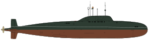 |
K-64 |
1968-06-02 |
1969-04-22 |
1971-12-31 |
|
1974-08-19 |
|
| K-123 |
1967-12-22 |
1976-04-04 |
1977-12-12 |
|
1996-07-31 |
|
| K-316 |
1969-04-26 |
1974-07-25 |
1978-08-30 |
|
1990-04-19 |
|
| K-432 |
1967-11-12 |
1977-11-03 |
1978-12-31 |
|
1990-04-19 |
|
| K-373 |
1972-06-26 |
1978-04-19 |
1979-12-29 |
|
1990-04-19 |
|
| K-493 |
1972-01-21 |
1980-09-21 |
1981-09-30 |
|
1990-04-19 |
|
| K-463 |
1975-06-26 |
1981-03-30 |
1981-12-30 |
|
1990-04-19 |
|
| Project 945 |
Барракуда (Barrakuda = "Barracuda") |
Sierra I |
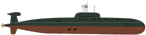 |
K-239 / B-239 Карп = Carp |
1979-07-20 |
1983-07-29 |
1984-09-29 |
Northern Fleet |
|
|
| K-276 / B-276 Кострома (Краб) Kostroma (Krab) |
1984-04-21 |
1986-07-26 |
1987-11-27 |
Northern Fleet |
|
|
| Project 945A |
Кондор (Kondor = "Condor") |
Sierra II |
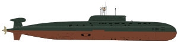 |
K-534 / B-534 Нижний Новгород Nizhniy Novgorod |
1986-02-15 |
1989-07-08 |
1990-12-26 |
Northern Fleet |
|
|
| K-336 / B-336 Псков Pskov |
1989-07-29 |
1992-07-28 |
1993-12-14 |
Northern Fleet |
|
|
| Project 945AB 946Б |
Марс (Mars = "Mars") |
Sierra III |
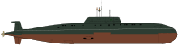 |
K-336 / B-336 Марс Mars |
|
|
|
|
|
|
| Project 685 |
Плавник (Plavnik = "Fin") |
Mike |
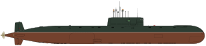 |
K-278 Комсомолец Komsomolets |
1978-04-22 |
1983-06-03 |
1983-12-28 |
|
1990-06-06 |
1989-04-07 |
| Project 971 |
Щука-Б (Shchuka = "Pike") |
Akula-I |
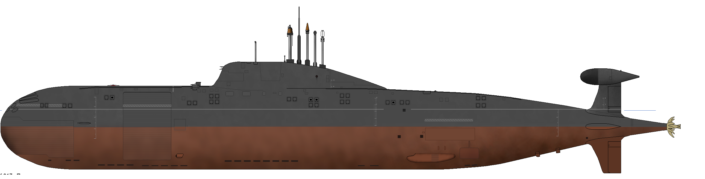 |
K-284 Акула (Akula = "Shark") |
1983-11-11 |
1984-06-27 |
1984-12-30 |
Pacific Fleet |
2001 |
|
| K-480 Барс / Ак Барс (Bars / Ak Bars = "Leopard / Snow Leopard") |
1985-02-22 |
1988-04-16 |
1988-12-29 |
Northern Fleet |
2002 |
|
| K-263 Дельфин / Барнау́л (Delfin / Barnaul) |
1985-05-09 |
1986-05-28 |
1987-12-30 |
Pacific Fleet |
2011 |
|
| K-322 Кашалот (Kashalot) |
1986-09-05 |
1987-07-18 |
1988-12-30 |
Pacific Fleet |
Possible lease to India |
|
| K-317 Пантера (Pantera) |
1986-11-06 |
1990-05-21 |
1990-12-27 |
Northern Fleet |
|
|
| K-391 Кит / Братск (Kit / Bratsk) |
1988-02-23 |
1989-04-14 |
1989-12-29 |
Pacific Fleet |
|
|
| K-331 Нарвал / Магадан (Narval / Magadan) |
1989-12-28 |
1990-06-23 |
1990-12-23 |
Pacific Fleet |
|
|
| Project 971L |
Щука-Б (Shchuka = "Pike") |
Akula-IL |
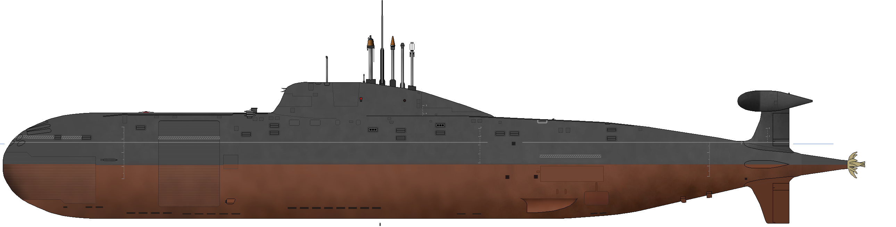 |
K-461 Волк (Volk = "Wolf") |
1987-11-14 |
1991-06-11 |
1991-12-29 |
Northern Fleet |
|
|
| K-328 Леопард (Leopard) |
1988-10-26 |
1992-06-28 |
1992-12-30 |
Northern Fleet |
|
|
| K-154 Тигр (Tigr = "Tiger") |
1989-09-10 |
1993-06-26 |
1993-12-29 |
Northern Fleet |
|
|
| K-419 Морж / Кузбасс (Morzh / Kuzbass = "Walrus / Kuznetsk Basin") |
1991-07-28 |
1992-05-18 |
1992-12-31 |
Pacific Fleet |
|
|
| K-295 Дракон / Самара (Drakon / Samara = "Dragon / Samara") |
1993-11-07 |
1994-08-05 |
1995-07-17 |
Pacific Fleet |
|
|
| K-152 Нерпа / Чакра (Nerpa / Chakra = "Baikal Seal / Chakra") |
1993 |
2006-07-27 |
2009-12-28 |
|
|
|
| Ирибис (Iribis = "Snow Leopard") |
1994 |
|
|
|
|
|
| Project 971U |
Щука-Б (Shchuka = "Pike") |
Akula-II |
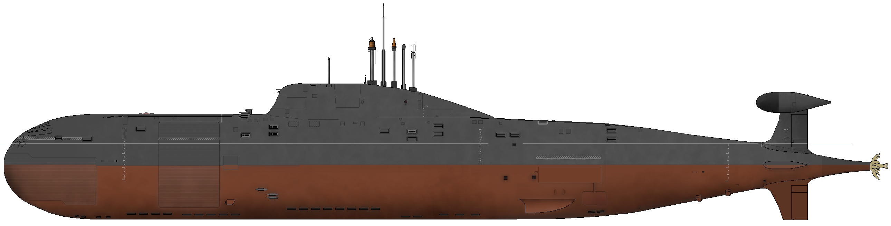 |
K-157 Вепрь (Vepr = "Wild Boar") |
1990-07-13 |
1994-12-10 |
1995-11-25 |
Northern Fleet |
|
|
| K-337 Кугуар (Kuguar) |
1992-08-18 |
|
|
|
|
|
| K-333 Рысь (Rys = "Lynx") |
1993-08-31 |
|
|
|
|
|
| Project 971M |
Щука-Б (Shchuka = "Pike") |
Akula-III |
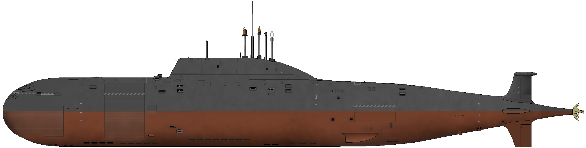 |
K-335 Гепард (Gepard) |
1991-09-23 |
1999-09-17 |
2001-12-03 |
Norther Fleet |
|
|
| CRUISE MISSILE ATTACK SUBMARINES (SSGN): |
| Project 885 |
Ясень (Yasen = "Ash Tree") |
Graney |
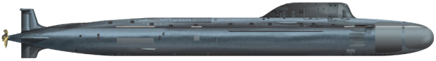 |
K-560 Северодвинск (Severodvinsk) |
1993-12-21 |
2010-06-15 |
2013-12-30 |
Northern Fleet |
|
|
| Project 885M |
Ясень-М (Yasen = "Ash Tree") |
Graney |
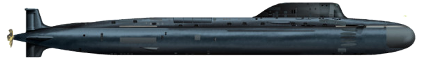 |
K-561 Казань (Kazan) |
2009-07-24 |
2017-03-31 |
2020 |
|
|
|
| K-573 Новосиби́рск (Novosibirsk) |
2013-07-26 |
2019 |
2020 |
|
|
|
| K-571 Красноя́рск (Krasnoyarsk) |
2014-07-27 |
2021 |
2021 |
|
|
|
| K-564 Арха́нгельск (Arkhangelsk) |
2015-03-19 |
2020 |
2022 |
|
|
|
| Пермь (Perm) |
2016-07-29 |
2020 |
2023 |
|
|
|
| Улья́новск (Ulyanovsk) |
2017-07-28 |
|
2024 |
|
|
|